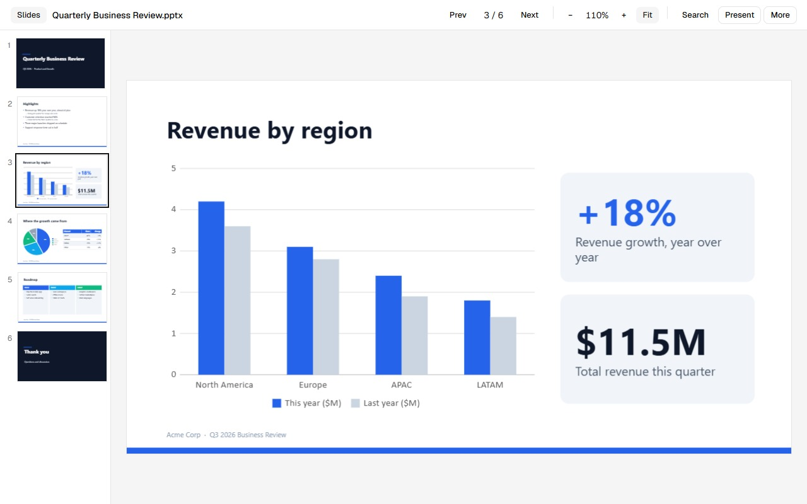
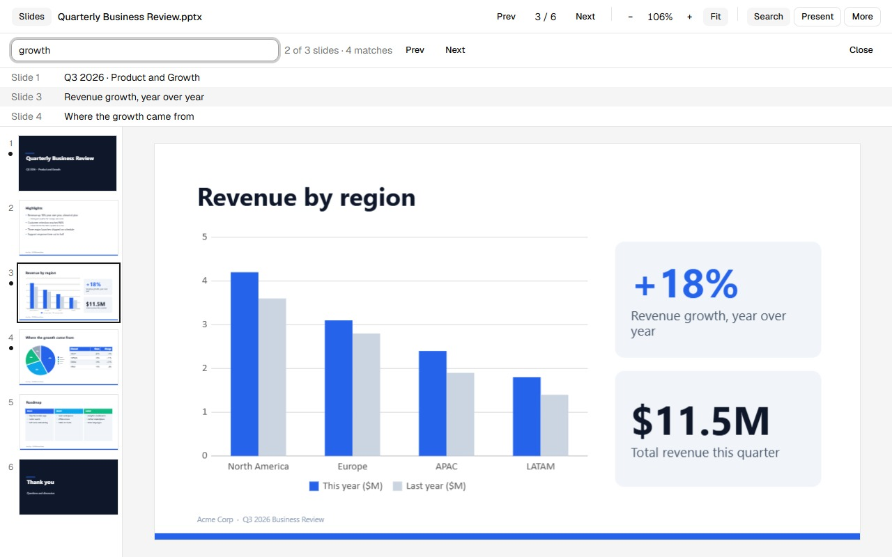
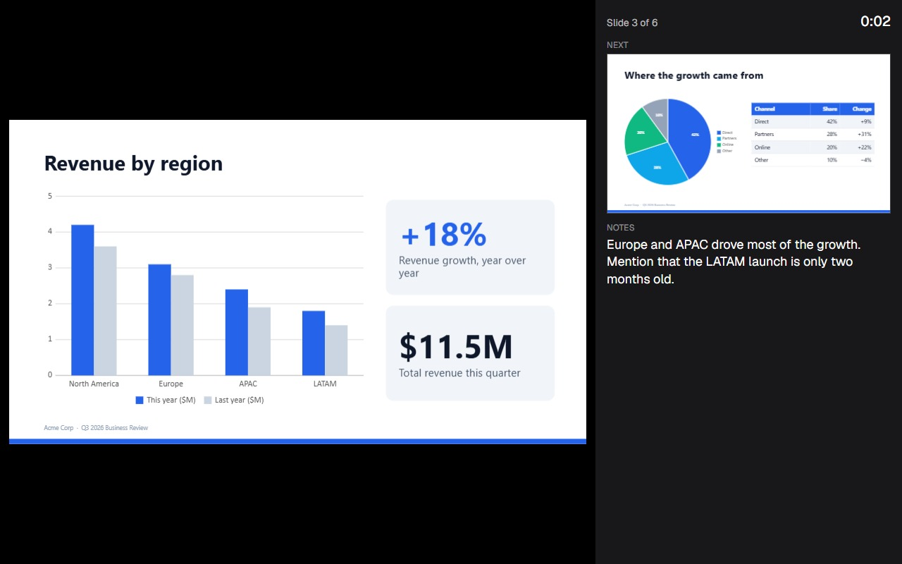
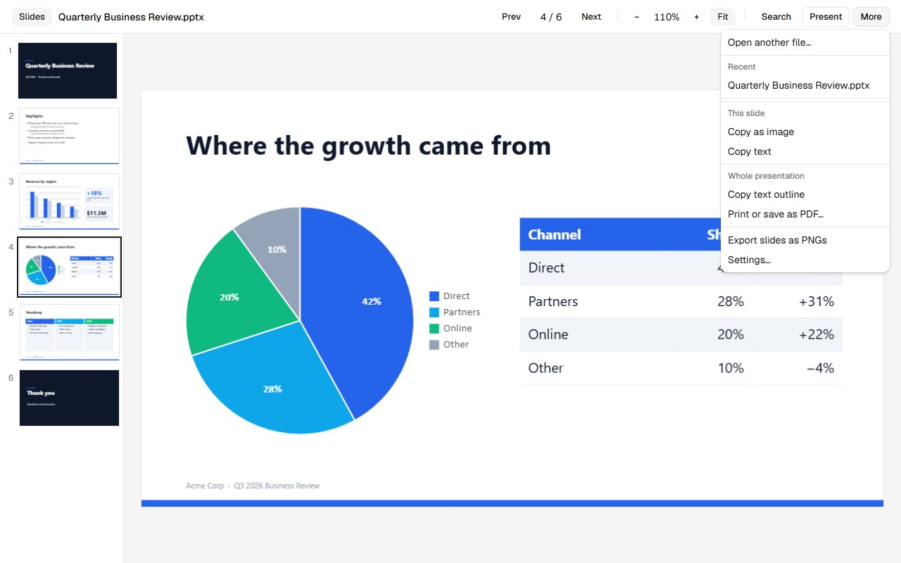

PowerPoint files, right in your browser.
Opendeck is a free, open-source viewer with search and a full-screen slideshow. No upload, no account, no server. Your files stay on your device.
Works in Chrome, Edge, Firefox and Zen. Free, MIT licence.

Everything you need to read and present a deck
Open a presentation, find what you need, and present it, without installing Office.

Search everything
Slide text, tables and speaker notes. Matching slides are marked in the list.

Present with notes
Full-screen slideshow that plays animation builds and transitions, with a speaker view.

Take the content with you
Copy a slide as an image or text, copy an outline, print or save as PDF, export PNGs.
- Several ways to open filesToolbar icon, drag and drop, recent files, or links you right-click. Optionally, downloads open straight in the viewer.
- Light and darkFollows your system theme. Slides fit your window, or zoom in.
- Draws what is in the fileMaster and layout styles, shapes, pictures, tables, charts and SmartArt. Content it cannot draw is clearly marked.
- Presenter toolsLaser pointer, pen, slide grid, black and white screens, and jump to any slide.
- Many formats
.pptx,.ppsx,.potxand the macro-enabled variants. - Open sourceMIT licensed, built in the open. Read the code, report problems, send fixes.
How it works
A presentation file is a zip of XML. Opendeck unpacks it and draws every slide itself, inside your browser.
Open a file
Click the toolbar icon, choose a file or drop one on the page. Nothing is sent anywhere.
Look around
Browse slides, search, zoom, or switch the theme. Slides are drawn on demand, so large decks stay quick.
Present or reuse
Start the slideshow with F5, or copy, print and export what you need.
Private by design
The short version. The full policy is in PRIVACY.md.
- Presentations are read and drawn on your device. No uploads, no analytics, no tracking.
- Access to websites is optional and off until you turn it on in Settings. It is used only to fetch the file you just downloaded or right-clicked, and you can remove it at any time.
- Recent files are kept in your browser only, and Settings can clear them.
- This site loads no third-party scripts, fonts or trackers.
Support
Something looks wrong, or you have an idea? Open an issue on GitHub. It takes a minute, and everyone can see the answer.
You need a free GitHub account. Please do not attach private presentations; a small example that shows the problem is enough.
A slide looks different from PowerPoint.
Opendeck draws slides itself from the file, so very unusual effects can differ. Open an issue with a small example and what you expected. Content it cannot draw is marked on the slide instead of silently dropped.
Why did downloads not open in the viewer?
That feature is optional. Open the extension's Settings and turn on Open downloads and links here. Your browser then asks for access to websites, which is only used to read the file you just downloaded.
How do I open a file from my computer by double-clicking?
Turn on Allow access to file URLs for Opendeck on the browser's extensions page. Browsers keep that switch separate and extensions cannot turn it on for you.
Does it edit presentations?
No. Opendeck is a viewer: open, search, present, copy, print and export. Your files are never changed.
Is it really free?
Yes. It is open source under the MIT licence, with no ads, no accounts and no paid tier.